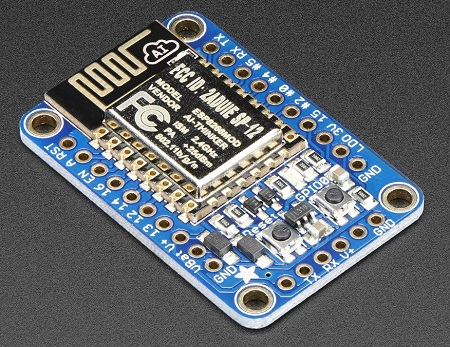
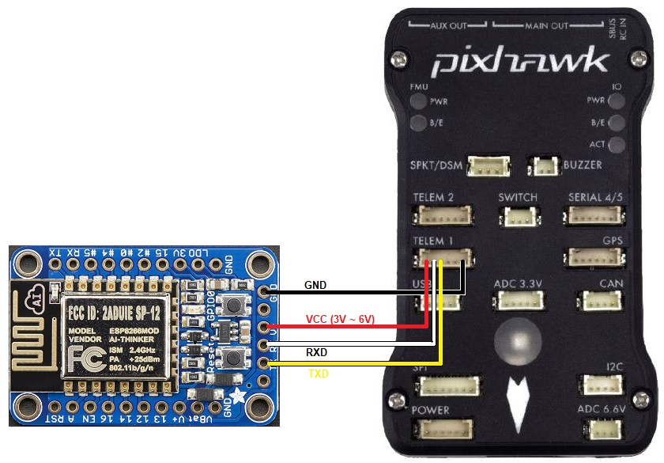
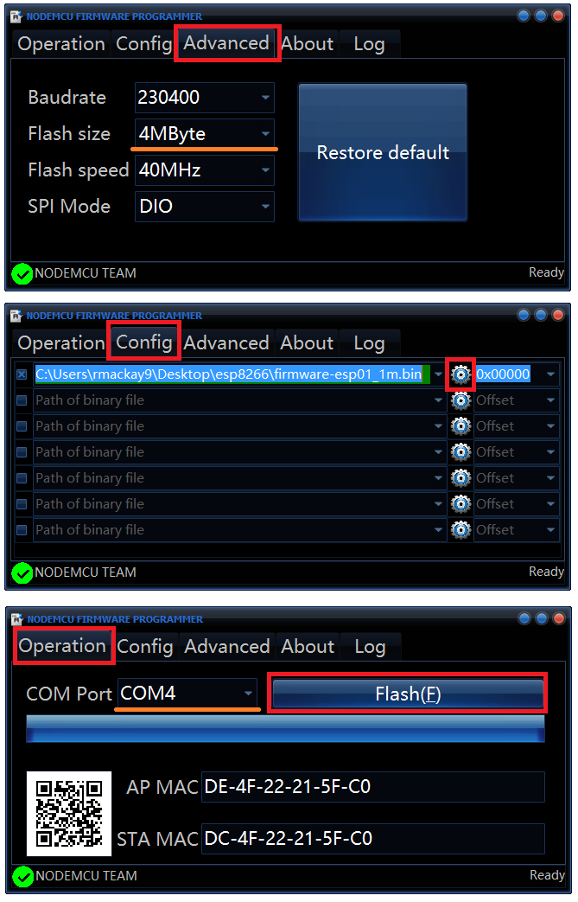

[copywiki destination=”plane,copter,rover,blimp”]¶
ESP8266 wifi telemetry¶
{kind=link}
The ESP8266 wifi module is an inexpensive programmable wifi modules available from many sources. It also comes included with most Pixracers.
Where to Buy¶
The adafruit HUZZAH ESP8266 breakout board is recommended because it can be connected to an autopilot without the need for 3.3V regulator or level shifters.
Connecting to an autopilot¶
{kind=link}
If connected to Serial1/Telem1 these parameters should be set on the autopilot (if using another telemetry port, replace the “1” in the parameter name with the telemetry port’s number):
SERIAL1_PROTOCOL = 2 (MAVLink2) or 1 (MAVLink1)
SERIAL1_BAUD = 921 (921600 baud)
If you have problems connecting, it may help to set BRD_SER1_RTSCTS = 0 to disable flow control although this is not normally necessary
Connecting from a Ground Station¶
load the MAVESP8266 firmware to the device if you haven’t already (see below)
on your PC, open the wifi network connections screen and select the wifi access point (SSID “ArduPilot” or “PixRacer” with a lower case password “ardupilot” or “pixracer” respectively)
on the ground station, set the connection type to UDP and press “Connect”
If all is well the ground station will connect, download parameters and the HUD should move as the vehicle is moved.
Flashing the device with the MAVESP8266 firmware¶
We recommend flashing the ArduPilot specific version of MAVESP8266 (binaries, source code) over the original MAVESP8266 because it includes two additional features:
mavlink2 support
subsequent firmware uploads can be done over wifi
simple configuration web interface
An FTDI Cable like this one from SparkFun is required for at least the first time the firmware is upload to the device.
If you are using the Adafruit HUZZAH ESP8266 board and are flashing from a Windows PC then you should:
solder a 6pin header to the narrow end of the board that has the TX, RX, VCC and GND pins
connect the device to your computer using the FTDI cable
put the device into bootloader mode by pressing both the Reset and GPIO0 buttons, then release the Reset button followed by the GPIO0 button. the red LED should remain dimly lit.
download the ArduPilot specific version of MAVESP8266 from this directory
firmware-esp01_1m.bin is for boards with 1MB of flash (most boards)
firmware-esp01.bin is for boards with only 512KB of flash (very old boards)
firmware-esp12e.bin is for boards with 4MB of flash
Windows users should download and run the NodeMCU flasher (64bit or 32bit)
on the Advanced page ensure the Flash size is set to 4MByte
on the Config page push the gear and select the firmware downloaded above
on the Operation page select the “COM Port” and push the “Flash” button. If successful the blue bar will slowly stretch from left to right and the icon on the bottom left will turn green.

Mac users should use the esptool
First, find the COM of your connected device by using the following command line in the terminal. The USB COM port that the ESP8266 is attached will appear something “/dev/ttyusbserial-A600eto2”
$ ls /dev/tty\.*
Next, you need to erase all content in your ESP8266. Put the ESP8266 in bootloader mode, and run this command in your terminal window, replacing the COM with the ESP8266 COM port you found previously above
$ esptool.py --baud 921600 --port COM erase_flash
Finally, flash the board with the correct expected firmware: Put your device in bootloader mode again, and use the following command, again replacing the COM with the port you used in the previous command.
$ esptool.py --baud 921600 --port COM write_flash --flash_mode dio --flash_size detect 0x0 firmware-XXXX.bin
Linux users should use the esptool
{kind=link}
Changing the Wifi SSID and Password¶
connect from your PC to the wifi access point (initial access point ID is “ArduPilot”, and password is “ardupilot”)
open a browser to 192.168.4.1 and a simple web interface will appear like below
click on the “Setup” link
set the “AP SSID” and “AP Password” fields (both must be between 8 and 16 characters), push the “Save” button and reboot the device
{kind=link}
Thanks to Ray’s blog which was the source for some of this page’s advice.